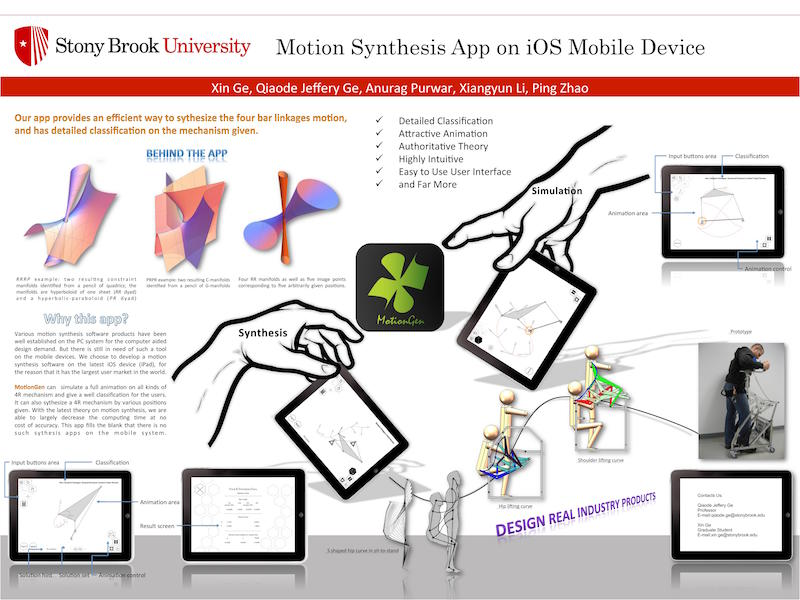

MotionGen - Mobile app to design linkage
- Client: Stony Brook University
- Date: September 2012
- Service: Mobile App Design andDevelopment
- Tools: Adobe CC, Xcode, Objective-C, C++, OpenGL-ES
- Featured: TedTalk

Introduction
MotionGen has two functionalities: synthesis and simulation. The 1.0 version presents both functions on one screen because we were focusing on bigger screens such as iPad, PC and Web. This new design gives user more choices that they can easily switch into any modes based on different tasks. You can find the 1.0 version in app store and google play store at Official Site.
"We take user testing seriously"
Ever from the early stage of the first version, we took much attentionon user testing. We tried to obtain feedback from students as early as possible so that we can quickly switch different ideas and interate design concept.
The new design concept also came from users' feedback and our observation. We knew that a lot of people used smaller devices such as phones or other android touchpads because they are easy to carry. It was clearly that the previous design left less usable areas on the screen and made it difficult to use on phones. Some devices could not even handle an effective two-finger movement if the screen is small. We also found that most users only used one function for a specific given task. Therefore we separated the two and redesigned the animation of the panels to hide or pop out buttons based on the procedures in the linkage design. This new design will take most use of the smaller screens and simplify the design procedures to provide a smoother, more intuitive and professional design experience.
The Project
The project was started in late of 2012. I was glad to be the first person developing this app for iOS devices with the support of Stony Brook University. After the first version being released and a few conferences, we added several team members to polish the app, extend the functionalities and develop android and web app. Thanks to many talented team members, it has now been very well developed and more functionalities are added.
A Brief Timeline
-
08.2012
It all started from a personal linkage design app for fun.
-
10.2012
Defined the new functionalities and concepts. Meanwhile, first stage development started.
-
01.2013
Five position synthesis realized. Initial design and development finished.
-
04.2013
Four position and three position synthesis added. Presented on TALENT Colloquium.
-
09.2014
More link types added. First version design was set and core functions were finished.
-
10.2014
Presented in TEDxSBU.
-
12.2015
Published on App Store.
Here are some Videos
This is the demonstration on how MotionGen (Ver. 1.0) works to solve a four bar synthesis problem by Matthew Fink.
...and the other features of MotionGen.
MotionGen was featured in TED talkX on Machine Design Innovation through Technology and Innovation 2014. (Demonstration at 13:38min)
The app had also helped in designing the sit-to-stand linkage system of the prototype of a patent protected mobility assist chair developed by Professor Anurag Purwar and Biodex Medical Systems. Relative information about the device can be found here.
We presented a poster demonstrating the perfect combination of research and its industrial application in TALENT conference at the first stage of the app development.
This is the 2016 poster we presented to show our recent research on the theoretical foundation that will be applied to future versions of the app.

Acknowledgement
The success of the app should be acknowledged to sponsors and everyone in the team:
· Teaching and Learning Enhancements with New Technology Grant, Stony Brook University, NY
· SUNY Innovative Instruction Technology Grant (IITG) 2014-2015
· Anurag Purwar, Jeffery Ge, Pranav Korrapati, Saurabh Bhapkar, Matthew Fink, Xiangyun Li, Ping Zhao
Close